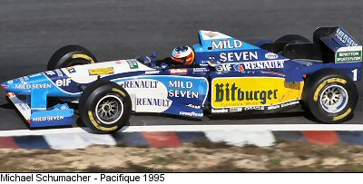

1995 Champion

The 1995 FIA Formula One World Championship was the 49th season of FIA Formula One motor racing. It featured the 1995 Formula One World Championship for Drivers and the 1995 Formula One World Championship. Michael Schumacher won his second consecutive Drivers Championship, and Benetton won the Constructors Championship, the first and only Constructors' title for the Benetton team.
1990 Champion


The 1990 FIA Formula One World Championship was the 44th season of FIA Formula One motor racing. It featured the 1990 Formula One World Championship for Drivers and the 1990 Formula One World Championship. McLaren led the Constructors' Championship with 64 points, followed by Ferrari on 54, Williams on 27 and Benetton on 25. This season was won by brazilian driver Ayrton Senna 4 years before his tragic death as he won his 3rd world title.